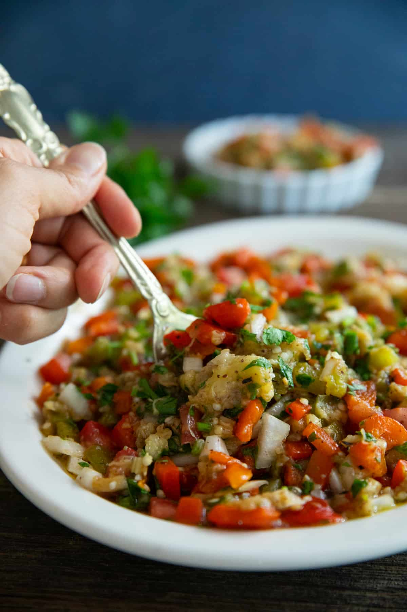

This page contains a recipe for Smoked Eggplant Salad. To see our other recipes visit the Ottoman Cuisine
Or Click on the Home botton to go back to Welcome page.
Smoked Eggplant Salad

Description
This Turkish eggplant salad is uniquely delicious.
Charred eggplant and bell peppers are combined with tomatoes, herbs and spices for a delightful convergence of flavors.
Like other Mediterranean salads, key ingredients include olive oil, lemon juice and sumac.
Ingredients
- Eggplant
- Choosing the Eggplant:
- The star of the dish is the eggplant, so make sure to get the best ones you can find. It's best to use Italian eggplants for this recipe.
- Bell Peppers
- Choosing the Bell Peppers:
- You need both green and red Bell Peppers.
- Onion
- Choosing the Onion:
- Yellow or White onion.
- Tomato
- Choosing the Tomato:
- Firm tomatoes such as roma or beefsteak would work perfectly for this recipe.
- Garlic
- Choosing the Garlic:
- One to two cloves would do.
- Parsley
- Choosing the Parsley:
- Use flat leaf parsley, not the curly variation.
- Olive Oil:
- Choosing the Olive Oil:
- Extra virgin olive oil adds depth and earthiness to the salad.
- Sumac
- Choosing the Sumac:
- This bright red spice adds tanginess to the salad and cannot be substituted with any other spice.
- Lemon
- Choosing the Lemon:
- Freshly squeezed lemon juice adds a nice bright flavor to the smoky eggplant.
Steps
How to Make Smoked Eggplant Salad
- EGGPLANT
- PREPARE THE EGGPLANT
- Wash and dry the eggplants completely.
- Pierce them using a fork and place them on a gas range over medium high heat.
- Flip a few times using a pair of tongs so it cooks evenly on all sides.
- This will take about 20 minutes.
- The skin will get charred and wrinkly, and the flesh will be completely soft.
- PEPPER
- PREPARE THE PEPPER
- Char the peppers on the gas range as well.
- Make sure to turn them occasionally so they char and soften evenly.
- This will take about 15 minutes.
- The peppers are ready once the skin is charred and they are somewhat softer.
- You can turn on 2-4 ranges at the same time to char the eggplants and peppers simultaneously.
- EGGPLANTS AND PEPPER
- PREPARE THE EGGPLANTS & PEPPER
- Place the charred eggplants and peppers in a large bowl and cover with a plastic wrap.
- Let them sit for 15 minutes to cool down and "sweat".
- Peel them using gloves or under running cold water.
- Then finely chop them using a kitchen knife.
- SUMAC AND OlIVE OIL
- PREPARE THE SUMAC
- Add in some of the olive oil followed by the sumac, lemon juice and salt.
- Taste and add more sumac and salt if needed.
- SERVING
- SERVE THE SALAD!
- Transfer to a serving plate and top with more olive oil.
- Serve at room temperature or cold.
- DONE!
- DONE! YOU CAN SERVE THE SALAD.
- Congratulations you've done it! Now Relax and enjoy the salad!
To see our other recipes visit the Ottoman Kitchen